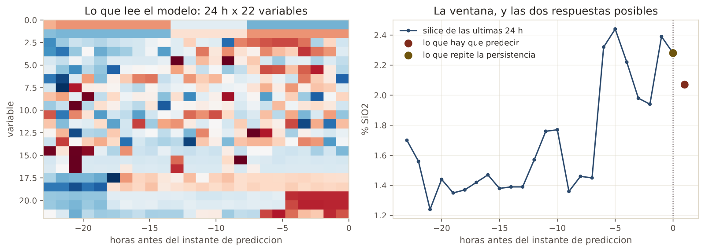
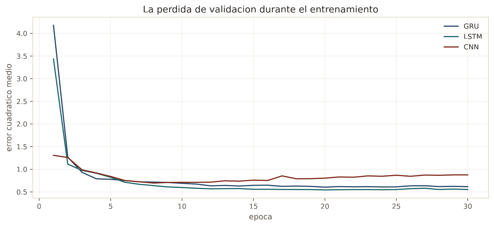
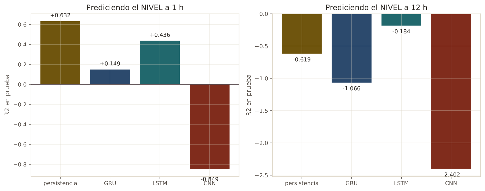
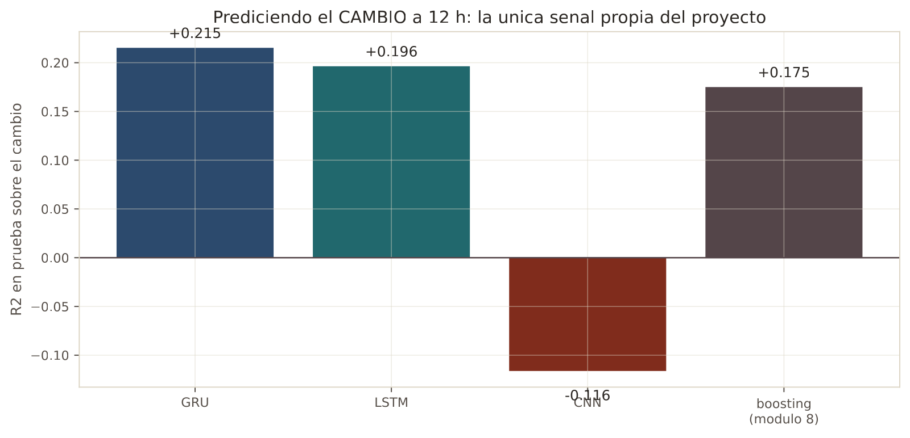

En 30 segundos
- +0,215. Un GRU prediciendo el cambio a 12 horas. Es la señal propia más alta de todo el proyecto, por encima del +0,175 del boosting.
- A una hora siguen sin ganar. El mejor de los tres se queda en 0,436 contra el 0,632 de la persistencia.
- La convolución causal fracasa, con −0,849 a una hora y −2,402 a doce. No todo lo moderno funciona.
- El veredicto aguanta. Ninguna combinación llega a ser desplegable, ni siquiera la mejor.
- Cuidado con el hueco de marzo. Una ventana de 24 horas puede saltarse trece días si nadie lo comprueba.
Qué resuelve este módulo
El proyecto original se quedó en una red neuronal sencilla, y nunca trató sus datos como lo que son: una secuencia.
Todos los modelos anteriores veían una hora como una fila independiente. El pasado entraba de contrabando, en cuatro columnas de retardo hechas a mano. Un modelo de secuencia lee la ventana entera y puede encontrar patrones que nadie pensó en construir como columna.
Aquí se prueban los tres candidatos serios, en la GPU, y se vuelve a poner el veredicto a prueba.
Antes de la teoría: un ejemplo de juguete
Cuatro horas. En la hora 1 y la hora 2 hay un pico de sílice en la alimentación, y después nada.
| Hora | 1 | 2 | 3 | 4 |
|---|---|---|---|---|
| Pico de entrada | 2 | 4 | 0 | 0 |
Paso 1. Un modelo sin memoria
Un modelo que ve una fila a la vez. En la hora 4 su entrada es 0.
hora 4 -> entrada 0 -> el modelo no sabe nadaPara él, la hora 4 es idéntica a una hora tranquila cualquiera. El pico de hace dos horas no existe.
Paso 2. Una celda recurrente, con retención 0,5
Una celda recurrente guarda un estado y lo arrastra. La regla es de una sola línea:
estado nuevo = estado anterior · 0,5 + entradaArrancando en cero:
| Hora | Entrada | Cuenta | Estado |
|---|---|---|---|
| 1 | 2 | 0 · 0,5 + 2 | 2 |
| 2 | 4 | 2 · 0,5 + 4 | 5 |
| 3 | 0 | 5 · 0,5 + 0 | 2,5 |
| 4 | 0 | 2,5 · 0,5 + 0 | 1,25 |
En la hora 4 el estado vale 1,25. El modelo sí sabe que hubo un pico, aunque su entrada de esa hora sea cero.
Paso 3. La retención es la perilla
Con retención 0,9, la memoria dura mucho:
hora 1: 2 hora 2: 5,8 hora 3: 5,22 hora 4: 4,698Con retención 0,1, se muere enseguida:
hora 1: 2 hora 2: 4,2 hora 3: 0,42 hora 4: 0,042Misma entrada, tres memorias distintas. Con 0,9 la hora 4 todavía recuerda casi todo. Con 0,1 ya se olvidó.
Paso 4. Qué añaden GRU y LSTM
En el ejemplo la retención es un número fijo que hemos elegido. En un GRU o un LSTM la retención se aprende, y además depende de la entrada.
Eso son las compuertas. En cada hora, la celda decide cuánto del pasado conserva y cuánto de lo nuevo incorpora. Puede aferrarse a un pico importante durante horas y olvidar el ruido al instante.
Paso 5. Qué acaba de pasar
Los retardos del módulo 5 eran una versión rígida de esto. sil_lag1, sil_lag2 y sil_lag3 son tres memorias fijas de una hora, dos y tres.
Una celda recurrente es la versión flexible: una memoria de duración variable, aprendida, sobre todas las variables a la vez. Si hay estructura temporal que los retardos no capturan, aquí tiene que aparecer.
Glosario
10 términos, en palabras simples
- Secuencia. Una serie de observaciones en orden, donde el orden importa.
- Ventana. Las últimas N horas que el modelo lee de golpe. Aquí, 24.
- Estado oculto. El resumen del pasado que la celda arrastra de una hora a la siguiente.
- Red recurrente. La que procesa la secuencia hora a hora, actualizando su estado. En inglés, RNN.
- Compuerta. La parte de la celda que decide cuánto se recuerda y cuánto se olvida. En inglés, gate.
- LSTM. Memoria de largo y corto plazo. Tres compuertas y un canal de memoria aparte.
- GRU. Unidad recurrente con compuertas. Más simple que un LSTM y a menudo igual de buena.
- Gradiente que se desvanece. El problema que las compuertas resuelven: en una secuencia larga, el gradiente se hace tan pequeño que las primeras horas dejan de enseñar nada.
- Convolución causal. Un filtro que solo mira hacia atrás en el tiempo, nunca hacia adelante.
- Dilatación. Separar los puntos que el filtro mira, para alcanzar más historia con las mismas capas.
Paso a paso
Paso 1. Poner los datos en una rejilla completa
Los módulos anteriores usaban horas ya limpias, sin huecos. Aquí eso no vale.
Al quitar las horas vacías, las que estaban a los dos lados del hueco de trece días quedan pegadas. Una ventana de 24 horas construida sobre esa rejilla saltaría de marzo a abril sin avisar. La rejilla se deja completa, con los huecos como vacíos.
Paso 2. Emitir solo ventanas contiguas
Una ventana se acepta cuando sus 24 horas existen de verdad, y también la hora que hay que predecir. Es una comprobación de tres líneas, y sin ella el modelo aprende de saltos temporales inventados.
Paso 3. Escalar con las ventanas de entrenamiento
Igual que en el módulo 4. La media y la desviación salen solo del entrenamiento.
Paso 4. Entrenar los tres candidatos
GRU y LSTM son recurrentes. La convolución causal es la alternativa: en vez de recorrer la secuencia, aplica filtros que solo miran hacia atrás.
Paso 5. Preguntar las dos cosas
Nivel y cambio, como en el módulo 8. Con el añadido de que aquí el modelo tiene información temporal de verdad.
El código, por partes
Paso 1. Construir ventanas contiguas
complete = ~np.isnan(values).any(axis=1)
for end in range(WINDOW - 1, len(frame) - lead):
start = end - WINDOW + 1
if not complete[start:end + 1].all() or np.isnan(target[end + lead]):
continue
stacks.append(values[start:end + 1])línea por línea, 4 entradas
np.isnan(values).any(axis=1)- Marca cada hora que tenga algún dato ausente. La virgulilla invierte, así que
completemarca las horas buenas. complete[start:end + 1].all()- Exige que las 24 horas de la ventana existan. Es la línea que impide saltar el hueco de marzo.
continue- Salta a la siguiente vuelta del bucle sin ejecutar el resto.
values[start:end + 1]- El trozo de tabla que forma la ventana. En Python el final del rango no se incluye, por eso el más uno.
Dispositivo: cuda · torch 2.12.0.dev20260408+cu128
Rejilla horaria completa: 4415 horas · 21 variables
Ventana de 24 h · corte 2017-08-01De 4.415 horas de rejilla salen 3.089 ventanas de entrenamiento y 960 de prueba. Las que faltan son las que tocaban el hueco.

Paso 2. La celda recurrente, en código
class Recurrent(nn.Module):
def __init__(self, inputs, hidden=64, kind="gru"):
super().__init__()
cell = nn.GRU if kind == "gru" else nn.LSTM
self.rnn = cell(inputs, hidden, num_layers=1, batch_first=True)
self.head = nn.Linear(hidden, 1)
def forward(self, x):
output, _ = self.rnn(x)
return self.head(output[:, -1, :]).squeeze(-1)línea por línea, 6 entradas
class Recurrent(nn.Module)- En PyTorch un modelo es una clase que hereda de
nn.Module. Ahí viven sus capas. super().__init__()- Llama al constructor de la clase madre. Sin esto PyTorch no registra las capas.
nn.GRU(inputs, hidden)- La celda recurrente.
hidden=64es el tamaño del estado que arrastra. batch_first=True- Le dice que los datos llegan como (lote, tiempo, variables). Sin esto espera el tiempo primero.
forward(self, x)- Lo que ocurre al pasar datos por el modelo. Es el método que PyTorch llama.
output[:, -1, :]- De toda la secuencia de salida, solo el último instante. Ahí está el resumen de las 24 horas.
=== horizonte 1 h · 3089 ventanas de entrenamiento, 960 de prueba
persistencia R2 +0.6323
GRU nivel R2 +0.1487 aporte -0.4836 (11 s)
LSTM nivel R2 +0.4364 aporte -0.1959 (5 s)
CNN nivel R2 -0.8487 aporte -1.4810 (4 s)
Paso 3. La convolución causal, la alternativa a la recurrencia
for dilation in (1, 2, 4):
layers += [nn.Conv1d(previous, channels, kernel_size=3, dilation=dilation),
nn.ReLU()]línea por línea, 4 entradas
nn.Conv1d- Convolución en una dimensión, que aquí es el tiempo.
kernel_size=3- Cada filtro mira tres instantes a la vez.
dilation=1, 2, 4- La separación entre los instantes que mira. Duplicándola, tres capas alcanzan 15 horas atrás con muy pocos parámetros.
nn.ReLU()- La misma activación del módulo 10: deja pasar lo positivo y corta lo negativo.
=== horizonte 12 h · 3067 ventanas de entrenamiento, 960 de prueba
persistencia R2 -0.6187
GRU nivel R2 -1.0659 aporte -0.4472 (4 s)
GRU cambio R2 +0.2153 sumado al ultimo valor: -0.2702
LSTM nivel R2 -0.1835 aporte +0.4352 (3 s)
LSTM cambio R2 +0.1963 sumado al ultimo valor: -0.3009
CNN nivel R2 -2.4020 aporte -1.7833 (3 s)
CNN cambio R2 -0.1162 sumado al ultimo valor: -0.8068El resultado, medido
Qué esperábamos. Que los modelos de secuencia mejoraran a una hora, porque leen 24 horas enteras en vez de cuatro retardos.
Qué salió. Lo contrario a una hora, y algo interesante a doce.
A una hora, ninguno se acerca
| Modelo | R² del nivel | Aporte sobre la persistencia |
|---|---|---|
| Persistencia | 0,632 | referencia |
| LSTM | 0,436 | −0,196 |
| GRU | 0,149 | −0,484 |
| Convolución causal | −0,849 | −1,481 |

El mejor pierde por dos décimas. Y eso teniendo acceso a mucha más información que los cuatro retardos del módulo 5, que llegaban a 0,641.
La explicación es la de siempre, vista desde otro ángulo. A una hora, la respuesta ya está en el último valor. Un modelo con 64 estados ocultos tiene que aprender a copiar ese valor, y aprender a copiar con 3.089 ejemplos sale peor que copiar directamente.
A doce horas aparece la señal
| Modelo | R² del cambio |
|---|---|
| GRU | +0,215 |
| LSTM | +0,196 |
| Boosting, módulo 8 | +0,175 |
| Convolución causal | −0,116 |

El GRU llega a +0,215 prediciendo el cambio a 12 horas, por encima del +0,175 que había conseguido el boosting. Es una mejora real, y viene de tratar la secuencia como secuencia.
También el LSTM del nivel mejora a la persistencia a 12 horas, −0,184 contra −0,619. Es la única vez que un modelo le gana en el nivel, aunque los dos siguen por debajo de predecir la media.
Qué significa. Que Kevin tenía razón a medias al sospechar del veredicto. Un modelo mejor sí capta más: la señal propia sube de 0,175 a 0,215, un 23 % más.
Y el veredicto sigue en pie. Sumando ese cambio al último valor conocido, el resultado a 12 horas es −0,270. Eso mejora al −0,330 del boosting y al −0,619 de la persistencia. Y sigue siendo peor que no tener modelo.
La convolución causal, un fracaso que también informa
−0,849 a una hora y −2,402 a doce. Es el peor modelo del proyecto entero, por debajo incluso de la red neuronal del módulo 10.
No hay que disimularlo. Las convoluciones causales funcionan muy bien en series con patrones locales repetidos, como el audio. Aquí la señal útil está casi entera en el último valor, y un filtro que promedia tres instantes con dilatación la reparte en vez de aprovecharla.
Que una técnica sea moderna no la hace apropiada.
Lo que este módulo deja abierto
El proyecto ha probado árboles, rectas, boosting, redes densas y redes de secuencia. Nunca ha probado lo que un ingeniero de series de tiempo habría hecho primero: comprobar estacionariedad, diferenciar, y correr una línea base clásica.
El módulo 12 lo hace, con SARIMAX.
Ojo
- La rejilla se deja con huecos. Si se quitan las horas vacías, una ventana de 24 horas puede saltarse trece días sin avisar. La comprobación de contigüidad cuesta tres líneas.
- Más información no es mejor resultado. Los modelos de secuencia leen 24 horas por 22 variables y pierden contra copiar un número.
- Aprender a copiar es difícil. Un modelo con 64 estados ocultos necesita muchos ejemplos para reproducir lo que la persistencia hace gratis.
- El escalado se calcula sobre las ventanas de entrenamiento. Igual que en el módulo 4, con el agravante de que aquí cada dato aparece en 24 ventanas distintas.
- La validación para la parada temprana sale del final del entrenamiento, no de un trozo al azar. En series de tiempo, un trozo al azar es fuga.
- Un fracaso rotundo también se reporta. La convolución causal da −2,402 y eso va en la tabla.
Puente metalúrgico
Un modelo de secuencia es un operador que lleva el turno entero, frente a uno que acaba de entrar y solo ve la pantalla actual. El que lleva el turno recuerda el pico de sílice de hace tres horas, y sabe que el circuito todavía lo está digiriendo.
La compuerta es el criterio para decidir qué recordar. Un buen operador olvida el ruido de un sensor y se acuerda durante horas de un cambio de mineral. Un GRU aprende ese criterio de los datos, en vez de que se lo fijen.
Y el resultado tiene su versión de planta. Por muy bueno que sea el operador, si la pregunta es "cuánta sílice hay ahora mismo" y el laboratorio acaba de reportar hace una hora, el análisis gana a la experiencia. La experiencia empieza a valer cuando hay que anticipar doce horas, y eso es exactamente lo que dice el +0,215.
Repaso
¿Qué hace un modelo de secuencia que los retardos del módulo 5 no hacían?
Los retardos son tres memorias fijas: una hora, dos y tres, y solo del objetivo.
Una celda recurrente arrastra un estado y lo actualiza en cada hora. Su retención se aprende de los datos, y además puede depender de lo que esté entrando. Todo eso sobre las 22 variables a la vez, no solo sobre la sílice. Es la versión flexible de la misma idea: memoria de duración variable en vez de tres fotos del pasado.
El GRU lee 24 horas por 22 variables y pierde contra repetir un número. ¿Cómo se explica?
Porque a una hora vista la respuesta está casi entera en ese número, y el modelo tiene que aprender a copiarlo.
La persistencia no aprende nada: coge el último valor del laboratorio y lo repite. El GRU tiene 64 estados ocultos y miles de pesos. Con 3.089 ventanas de entrenamiento, tiene que descubrir por sí mismo una sola cosa: lo mejor es reproducir una de sus entradas. Aprender a copiar es un problema fácil de enunciar y difícil de resolver con pocos datos. Por eso el LSTM se queda en 0,436 frente a 0,632.
El GRU del cambio a 12 horas da +0,215. ¿Por qué es el número importante del módulo?
Porque es señal que ningún baseline puede tener, y es la más alta que el proyecto ha logrado.
La persistencia predice cambio cero por definición, así que su R² sobre el cambio es cero. Todo lo que un modelo consiga ahí es mérito propio. El boosting del módulo 8 llegaba a +0,175 y el GRU llega a +0,215, un 23 % más, solo por tratar la secuencia como secuencia. Confirma que había algo que los modelos tabulares no estaban viendo.
Entonces, ¿el veredicto cambia?
No, pero se matiza, y las dos partes hay que decirlas.
La parte que cambia: un modelo mejor sí capta más señal. La parte que no: sumando ese cambio al último valor conocido, el resultado a 12 horas es −0,270. Sigue siendo peor que predecir la media. Un R² negativo no se despliega por muy bien que haya mejorado. La conclusión sigue siendo no desplegar, con una nota nueva: si algún día hay más datos, los modelos de secuencia son por donde habría que empezar.
La convolución causal da −2,402. ¿Se reporta o se descarta?
Se reporta, y con la explicación de por qué falló.
Descartar los resultados malos es cómo se construye un informe que engaña. Las convoluciones causales funcionan cuando la serie tiene patrones locales repetidos, como en audio o en texto. Aquí casi toda la información útil está concentrada en el último valor, y un filtro de tamaño tres con dilatación promedia ese valor con sus vecinos en vez de aislarlo. Es el modelo equivocado para esta señal, y saberlo tiene valor para el siguiente proyecto.